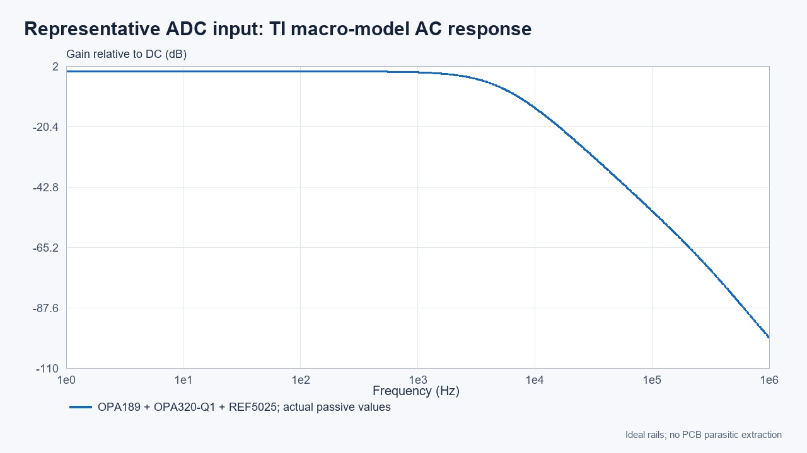
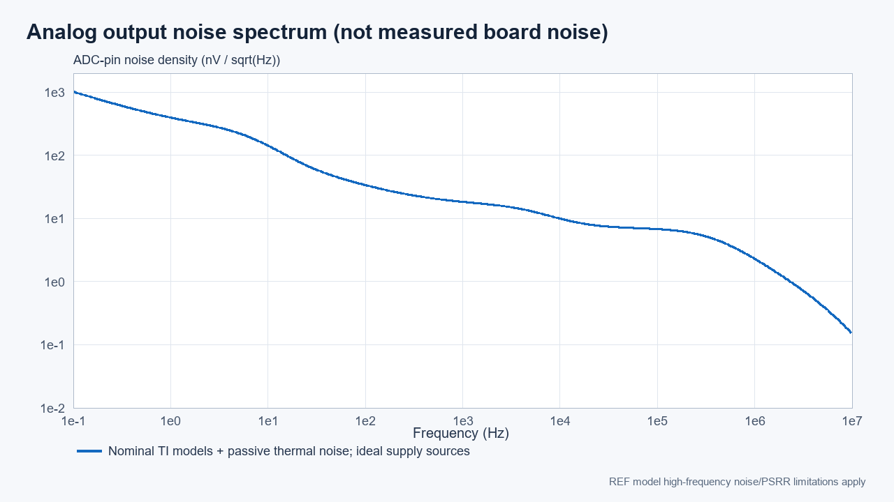
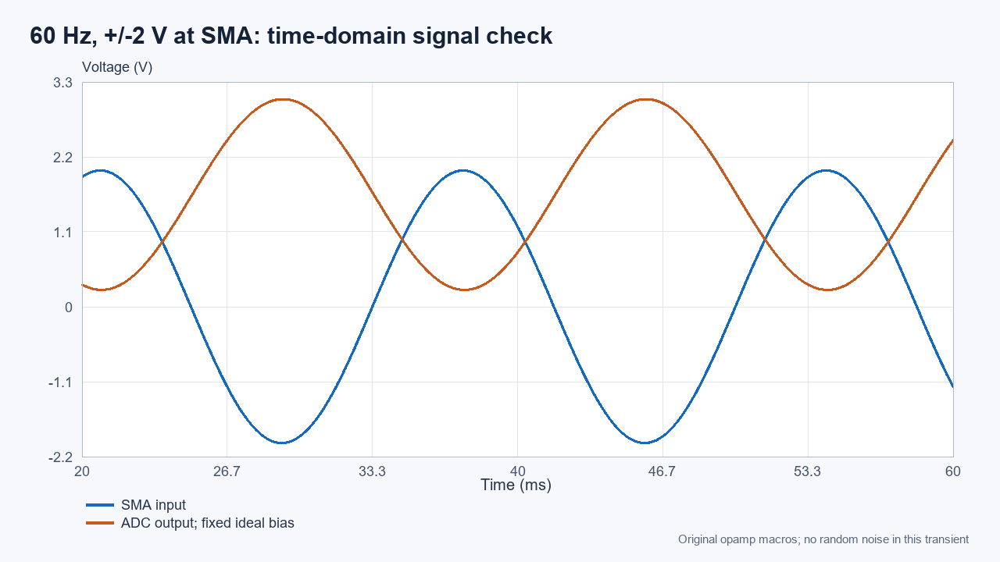
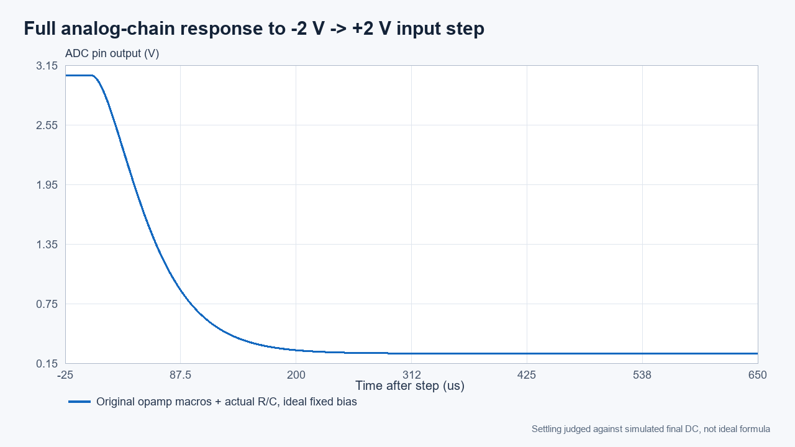
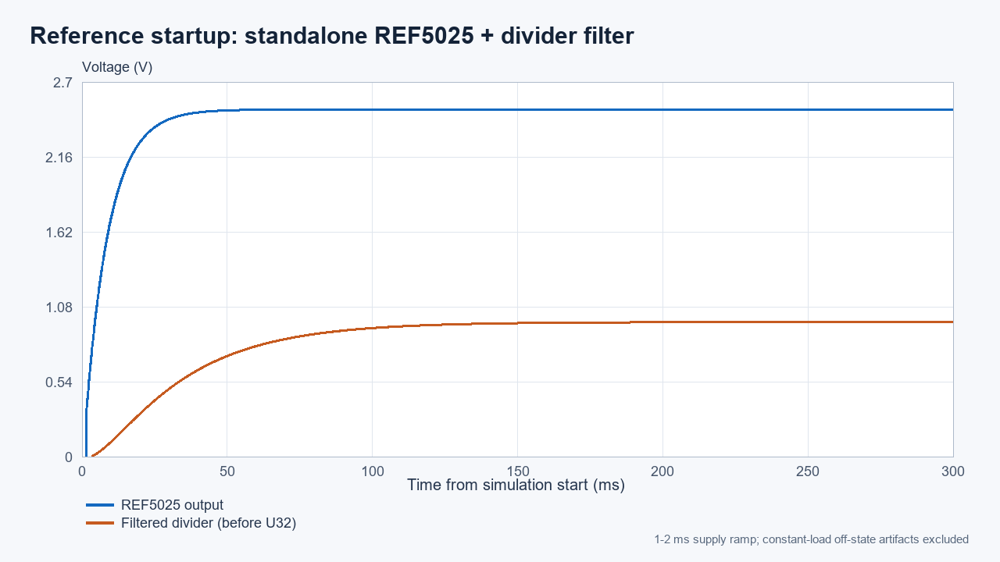
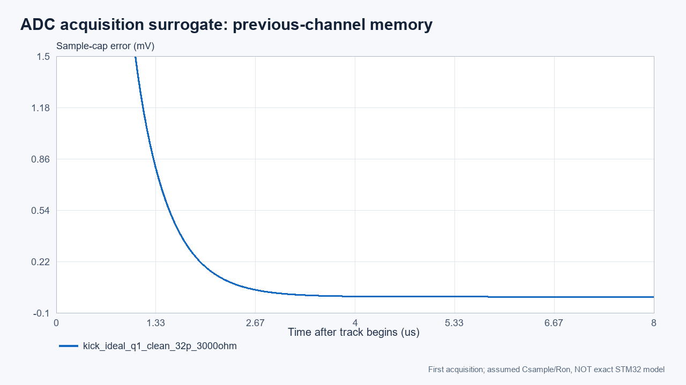

실행 엔진: ngspice 47 / TI 공식 PSpice 포맷 원본 모델. Cadence PSpice 실행 결과가 아닙니다. 회로도·PCB·펌웨어와 TEST_DAC8562는 수정하지 않았습니다.
대표 J2 채널의 명목 DC·60 Hz 전달 특성은 설계 의도에 부합합니다. 제조사 모델을 임의로 변경하지 않고, 초기 추정값 후 새로운 DC Newton 해를 구했습니다. 원본 ZIP/LIB 해시와 실행 로그를 보존했습니다. 단, 최저 전원에서의 정밀 출력 여유는 아래 별도 주의사항을 확인해야 합니다.
핵심 결과
항목
모델 결과
해석
DC 변환
약 VADC = 1.64815 − 0.70000 × VSMA
이상적 명목식 1.6472868 − 0.7 × VSMA와 모델 오프셋 차이
−3 dB 대역
3313.6 Hz
DC·60 Hz용 수 kHz 대역
60 Hz
-0.001185 dB / 추가 위상 -1.343°
출력은 기본적으로 반전됨
7.8 kHz 감쇠
-10.32 dB
15.6 kS/s의 Nyquist에서 강한 차단은 아님
DC 점 검증
44/44 점
5 V±5%, 3.3 V±5%의 지정 조합 및 입력 범위; 공차/온도 전수 보증 아님
±2 V 입력 결과 범위
0.248150…3.048152 V
검증 성공점만; 최소 출력 레일 여유 86.9 mV
4 V 입력 계단 정착
450.2 µs
시뮬레이션 최종값의 0.5 LSB(3.3 V/16 bit) 기준, 이상적 고정 바이어스
잡음 결과와 검증 한계
적분 상한 (하한 0.1 Hz)
ADC 핀 잡음
10
0.884 µVrms
3300
1.457 µVrms
7800
1.691 µVrms
100000000.0
5.384 µVrms
위 수치는 모델과 수동소자 열잡음의 명목 아날로그 출력 잡음입니다. 실제 전원 리플, MCU 내부 ADC·VREF+ 잡음, PCB 결합, 디지털 스위칭, 샘플링 후 alias는 포함하지 않습니다. 이를 실제 ADC의 유효 비트 수나 보드 잡음 보증으로 해석하면 안 됩니다.
추가 확인이 필요한 항목
최저 전원에서의 출력 여유: 3.3 V−5%=3.135 V, 입력 −2 V에서 출력 상단 여유는 약 86.9 mV입니다. 모델에서는 포화가 없었지만 OPA320 데이터시트 §6.7의 보증 개방루프 이득 시험 범위는 RL=10 kΩ에서 레일과 0.1 V, RL=2 kΩ에서 0.2 V 이상 떨어진 영역입니다. 실제 피드백 전류도 약 0.742 mA입니다. 따라서 이 저전원 조건의 편차·온도 포함 정밀 선형성은 이번 명목 모델 결과로 보증할 수 없습니다. 실제 3.3 V 최저 전압·공차를 확인하고, −5%까지 요구한다면 이득 축소 등의 여유 확보를 검토하십시오. 회로는 변경하지 않았습니다.
Anti-alias: 7.8 kHz에서 약 −10.3 dB이므로 강한 외부 고주파가 있으면 alias가 남을 수 있습니다. 신호 환경에 따라 필터 차수/대역 또는 취득 구조를 별도로 검토해야 합니다. 이번에는 수정하지 않았습니다.
DC 절대 정확도: 명목식 대비 모델 DC 오프셋은 약 0.86 mV입니다. 0.1% 저항 극단 조합만으로도 수 mV 오차가 가능하므로, 16-bit 분해능을 16-bit 절대 정확도로 간주하면 안 됩니다. 정밀 목표에 따라 매칭 저항망·기준전압·보정/실측을 검토하십시오.
기동 정착: REF 단독 모델의 분압 필터는 전원 램프 시작 후 약 0.208 s에 0.1% 이내에 들어옵니다. U32·후단 RC·펌프 및 실제 전원 순서는 별도이며 이 수치는 최대 보증이 아닙니다.
ADC 채널 잔류 전하: ST 자료의 CADC는 4 pF 전형값이며 최대값은 없습니다. Cs/Ron 가정 시험은 실제 MCU 스위치 전하주입·샘플 정확도 보증을 대신하지 않습니다. 8 µs 취득 조건의 결과는 results.json에 분리했습니다.
음전원: TPS72301은 이상적 −4.5 V/13 mA 부하에서 약 -3.01295 V로 수렴합니다. 모든 입력 −2 V일 때 10개 전단 OP AMP의 신호 전류까지 포함하면 명목 약 20.4 mA, 25°C 최대 정지전류 가정에서는 약 24.4 mA입니다. 전 온도 최대 정지전류 기준 약 25.4 mA에 피드백 분압 전류 약 0.119 mA도 추가해야 합니다. TPS60403 암호화 모델은 실행하지 않았으므로 펌프 리플·최대 부하·전원 차단 검증은 미완료입니다.

원본 제조사 모델의 대표 채널 AC 해석

아날로그 모델의 잡음만 포함 — 보드 실측/ADC 코드 잡음 아님

60 Hz 과도해석은 이상적 고정 바이어스 사용

입력 자체의 계단 정착과 ADC 채널 전환 정착은 별개

공유 기준전압의 단독 블록 기동 — 전체 보드 기동 보증 아님

샘플링 커패시터·스위치 저항 가정 시험
디버깅 커넥터도 있습니다
최종 회로도와 PCB에서 J1, Samtec FTSH-107-01-L-DV-K-A, 14핀(2×7), 1.27 mm SWD 헤더와 Top 실크를 확인했습니다. 케이블 연결 전 실제 핀 번호를 대조하십시오.
J1 핀
신호
3
+3V3/VTref
4
SWDIO/PA13
5
GND
6
SWCLK/PA14
7
GND
12
RESET# via R59 0R to NRST
나머지 핀은 현재 접속 없음이며 SWO/JTAG 별도 연결은 없습니다. UART 콘솔은 CN4 USB-C ↔ CH340C(U8) ↔ PA10 RX / PA9 TX입니다. TP17=GND, TP18=+3V3, TP19=+1V8입니다.
실패한 초기 실행도 로그에 남겼고 성공으로 계산하지 않았습니다. 무모델 션트 저항을 추가하여 결과를 바꾸는 수렴 우회는 채택하지 않았습니다. Noise 분석 문법과 내부 노드 초기값은 ngspice용이므로 덱을 PSpice에 그대로 넣을 수 있다고 보장하지 않습니다. MCU 전체·전원 전체·전체 PCB SPICE/CAM 검증이나 제조 승인이 아닙니다.